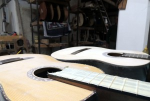
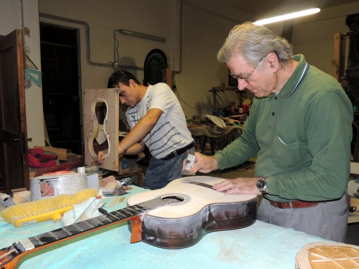

Chi siamo
Una storia fatta di mani, legni, ascolto e continuità artigianale. Un laboratorio dove il tempo viene usato per fare bene le cose.

Dal 1979 una bottega dedicata al suono vero
La Liuteria Lo Verde nasce nel 1979 da un'idea chiara: costruire e seguire strumenti con un approccio artigianale serio, senza inseguire la standardizzazione.
Fin dall'inizio il laboratorio ha lavorato su due binari: da una parte la costruzione di strumenti con identità, dall'altra il rapporto quotidiano con musicisti che portano in bottega esigenze reali, problemi concreti e aspettative diverse.
Proprio questo contatto costante con chi suona ha formato il nostro modo di lavorare: meno teoria astratta, più attenzione al comportamento reale dello strumento.
Tradizione
Crediamo nelle tecniche di liuteria che rispettano il materiale e il tempo necessario perché uno strumento venga fuori bene.
Ascolto
Ogni musicista ha esigenze diverse. Per questo il confronto con il cliente non è un contorno, ma una parte del lavoro.
Continuità
Portiamo avanti una linea coerente: strumenti credibili, manutenzioni fatte bene e proposte chiare, senza promesse vuote.
Uno strumento non è solo un oggetto da vendere
Una chitarra è una sintesi di struttura, comodità, suono e relazione con chi la suona. Per questo ogni valutazione nel laboratorio tiene conto del contesto d'uso: studio, live, repertorio, mano, dinamica e aspettative del cliente.
Ci interessa che lo strumento sia giusto per la persona, non solo che “suoni forte” o sia bello nelle fotografie.
